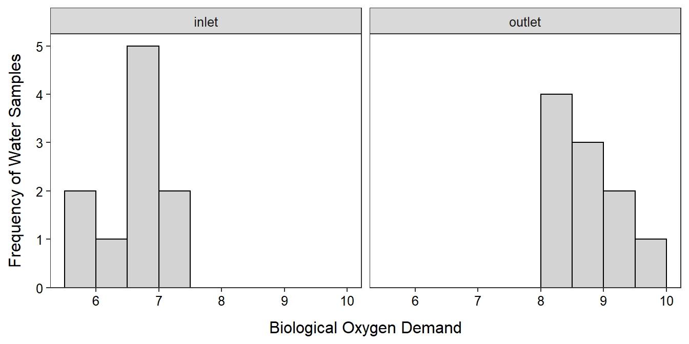
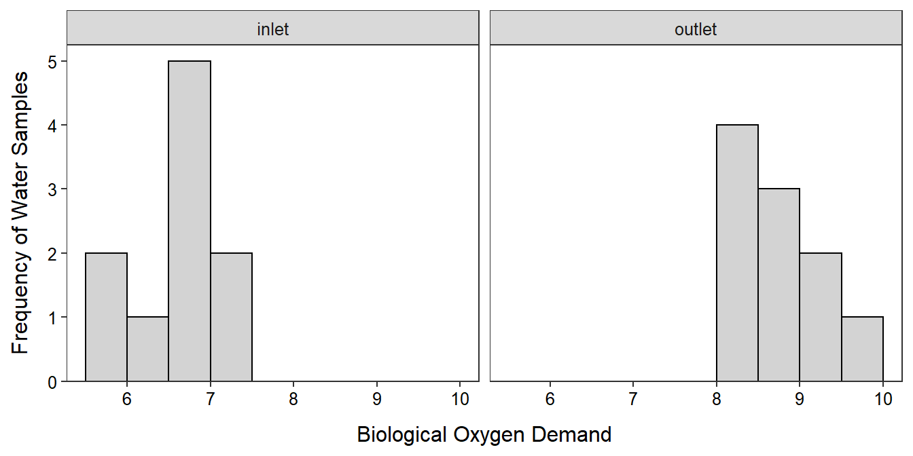

Module 2 2-Sample t Review
A two-sample t-test is a statistical method for comparing the means of a quantitative variable between two populations represented by two independent samples. The specific details of a two-sample t-test were covered in your introductory statistics course and will only be cursorily reviewed here.
2.1 Review
The null hypothesis for a 2-sample t-test is H0: \(\mu_{1}=\mu_{2}\), where \(\mu\) is the population mean and the subscripts represent the two populations. The alternative hypothesis of a 2-sample t-test may be “less than,” “greater than,” or “not equals.” We will use HA: \(\mu_{1}\ne\mu_{2}\) for most examples in this course.
The 2-sample t-test assumes that (i) individuals in the populations are independent; (ii) the sample size (n) is great than 40, greater than 15 and the histograms are not strongly skewed, or the histograms are normally distributed; and (iii) the population variances are equal. The assumption of equal variances for the 2-sample t-test is tested with Levene’s test, which uses H0: \(\sigma_{1}^{2}=\sigma_{2}^{2}\) and HA: \(\sigma_{1}^{2}\ne\sigma_{2}^{2}\), where \(\sigma^{2}\) is the population variance. If H0 is rejected for Levene’s test then the variances for both populations are assumed to be equal, such that only one combined sample variance needs to be estimated. That combined sample variance is called the the pooled sample variance and is computed as a weighted mean of the two sample variances,
\[ s_{p}^{2}=\frac{(n_{1}-1)s_{1}^{2}+(n_{2}-1)s_{2}^{2}}{n_{1}+n_{2}-2} \]
If the three assumptions are met then the statistic for the 2-sample t-test is \(\bar{x}_{1}-\bar{x}_{2}\) which is immediately standardized to a t test statistic with
\[ t=\frac{\bar{x}_{1}-\bar{x}_{2}}{\sqrt{s_{p}^{2}\left(\frac{1}{n_{1}}+\frac{1}{n_{2}} \right)}} \]
The t test statistic is converted to a p-value using a t-distribution with \(n_{1}+n_{2}-2\) df. Of course, a p-value < α means that H0 is rejected and the two population means appear to be different. A confidence interval would then be used to fully describe which population mean was greater (or smaller) and by how much.
2.2 Analysis in R
2.2.1 Data Format
Data for a 2-sample t-test must be in stacked format, where measurements are in one column and a label for the populations is in another column. Each row corresponds to the measurement and population of a single individual.
The data (data, meta) for the example below are the biological oxygen demands (BOD) at the inlet and outlet to an aquaculture facility. These data illustrate stacked data because each row is one water sample with two variables recorded – BOD and where the sample came from.
aqua <- read.csv("BOD.csv")headtail(aqua)#R> BOD src
#R> 1 6.782 inlet
#R> 2 5.809 inlet
#R> 3 6.849 inlet
#R> 18 8.545 outlet
#R> 19 8.063 outlet
#R> 20 8.001 outletStacked Data: Data where the quantitative measurements of two or more groups are “stacked” on top of each other and a second variable is used to record to which group (or population) the measurement belongs.
Stacked data is required for the methods used in this course.
Specific details for performing a 2-sample t-test in R were provided in your introductory statistics course, but will be cursorily reviewed below.
2.2.2 Assumption Checking
The metadata suggests that measurements at the intake and outtake were taken at different times. Thus, there is no reasonable reason to think that individuals are dependent across the two populations. Thus, the independence assumption is met.
The sample size is less than 40 but greater than 15. The histograms shown below are not particularly informative because of the small sample size. The histogram for the inlet samples appears to be not strongly skewed, but that for the outlet appears to be strongly right-skewed. I am going to continue with this analysis, but I will be cautious with my final interpretations.
ggplot(data=aqua,mapping=aes(x=BOD)) +
geom_histogram(binwidth=0.5,boundary=0,color="black",fill="lightgray") +
labs(y="Frequency of Water Samples",x="Biological Oxygen Demand") +
scale_y_continuous(expand=expansion(mult=c(0,0.05))) +
theme_NCStats() +
facet_wrap(vars(src))
The ggplot2 package is required to make plots with ggplot().
Levene’s test is computed with levenesTest() using a formula of response~groups as the first argument, where response represents the name of the quantitative response variable and groups represents the name of the categorical variable that identifies the two populations. The data.frame with the variables must be in data=. From the results below, it is concluded that the population variances appear to be equal because the Levene’s test p-value (0.5913) is greater than α=0.05.
levenesTest(BOD~src,data=aqua)#R> Levene's Test for Homogeneity of Variance (center = median)
#R> Df F value Pr(>F)
#R> group 1 0.2989 0.5913
#R> 18Levene’s test requires the NCStats package to be loaded.
2.2.3 Analysis
A 2-sample t-test is constructed in R with t.test() using the exact same response~groups formula and data= used in levenesTest(). Additionally, var.equal=TRUE is used when the two population variances should be considered equal. By default t.test() uses a “not equals” HA and a 95% confidence interval. In the results below the two sample means are 6.6538 for the inlet group and 8.6873 for the outlet group such that the statistic is 6.6538-8.6873=-2.0335; the t test statistic is -8.994 with 18 df; and the p-value is <0.00005 (or, more specifically, 4.449e-08).3 Because the p-value<α the H0 is rejected and we conclude that the mean BOD at the inlet is lower than the mean BOD at the outlet. More specifically, the mean BOD at the inlet is between 1.558 and 2.509 units lower than the mean BOD at the outlet. Thus, it appears that the mean BOD in the water is increased from when it enters to when it leaves the aquaculture facility.
t.test(BOD~src,data=aqua,var.equal=TRUE)#R> Two Sample t-test with BOD by src
#R> t = -8.994, df = 18, p-value = 4.449e-08
#R> alternative hypothesis: true difference in means is not equal to 0
#R> 95 percent confidence interval:
#R> -2.508511 -1.558489
#R> sample estimates:
#R> mean in group inlet mean in group outlet
#R> 6.6538 8.6873A graphic that illustrates the mean BOD with 95% confidence intervals for each sampling location is constructed below. Note that in the code below that the only items you need to change for your own data is in the first line, where data= should be set to the name of your data and x= and y= should be set to the names of the explanatory and response variables, respectively.
ggplot(data=aqua,mapping=aes(x=src,y=BOD)) +
geom_jitter(alpha=0.5,width=0.05) +
stat_summary(fun.data=mean_cl_normal,geom="errorbar",size=2,width=0) +
stat_summary(fun=mean,geom="point",pch=21,fill="white",size=2) +
labs(x="Water Sample Location",y="Biological Oxygen Demand") +
theme_NCStats()
2.3 Signal-to-Noise
The ratio of signal to noise can be a useful metaphor for understanding hypothesis testing, as we have done here, and model comparisons, as we will do in future modules. In this metaphor, think of “signal” as how different two things are and “noise” as anything that gets in the way of you receiving the signal. For example, the difference in heights of two students standing on the other side of the room is a “signal,” but smoke in the room that makes it difficult to see those students is “noise.” As another example, it may be easy to see an orange kayak (the “signal”) on Lake Superior on a calm day but harder to see it on a wavy day (i.e., more “noise”).
In a 2-sample t-test, the “signal” is the difference in the two group means (Figure 2.1), which is measured by \(\bar{x}_{1}-\bar{x}_{2}\), the numerator of the t-test statistic. The bigger the difference in sample means the stronger the “signal” that the population means are different.
The “signal” is the difference in sample means

Figure 2.1: Response variable by group for each indiviual (points) with group means shown as horizontal segments. The difference in sample means is highlighted as the “signal” in these data.
“Noise” is sampling variability, the fact that statistics (e.g., \(\bar{x}_{1}\) and \(\bar{x}_{2}\)) vary from sample to sample. Sampling variability in a 2-sample t-test is measured by \(SE_{\bar{x}_{1}-\bar{x}_{2}}\), which is the denominator of the t test statistic, or \(\sqrt{s_{p}^{2}\left(\frac{1}{n_{1}}+\frac{1}{n_{2}}\right)}\). This SE increases with increasing \(s_{p}^{2}\) and decreases with increasing n1 and n2. So the “noise” increases as the natural variability of individuals around their group means (i.e., \(s_{p}^{2}\)) increases (Figure 2.2), but decreases as the sample size increases.
The “noise” is sampling variability
Figure 2.2: Response variable by group for each indiviual (points) with group means shown as horizontal segments. The variability of individuals around the group means is highlighted as a part of the “noise” in these data.
The ratio of signal to noise is related to whether we will be able to detect the difference between two things or not. If the signal is large relative to the noise then the signal will be detected. In other words, will be able to tell the difference in heights of students if the room is not full of smoke.
For example, each panel in Figure 2.3 has the same signal (difference in means) but the noise (i.e., SE) increases from left to right. In the left-most panel it is very clear that the sample means are different (high signal-to-noise ratio), but in the right-most panel it is less clear that the sample means are different (low signal-to-noise ratio).
Figure 2.3: Response variable by group for each indiviual (points) with group means shown as horizontal segments for three different standard errors (SE; i.e., “noise”). Note that the group means are the same in all three panels.
The t test statistic is a measure of signal (i.e., difference in sample means) to noise (i.e., sampling variability as measured by the SE)
\[ t=\frac{\bar{x}_{1}-\bar{x}_{2}}{\sqrt{s_{p}^{2}\left(\frac{1}{n_{1}}+\frac{1}{n_{2}} \right)}} = \frac{\text{Signal}}{\text{Noise}} \]
Thus, larger values of the t test statistic indicate a larger signal-to-noise ratio. Larger t test statistics are further into the tail of the t distribution and result in smaller p-values. Therefore, small p-values represent larger signal-to-noise ratios and are more likely to lead to concluding that the population means differ. In other words, you were able to detect the “signal” through the “noise.”
More signal-to-noise means smaller p-values
We will return to the signal-to-noise metaphor throughout this course.
I usually round my p-values to four decimal places. In this case that would mean 0.0000 which is awkward. Thus, I will say p<0.00005 as the fifth position must have been less than 5 to round to 0.0000.↩︎